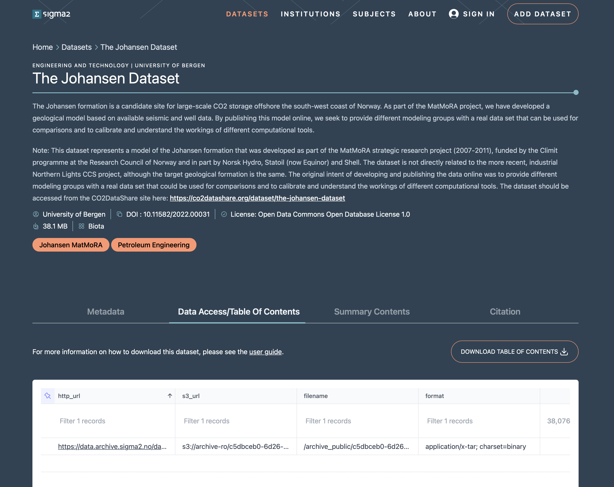

Downloading datasets
There are two methods for downloading datasets: via the HTTP protocol, or via the S3 protocol. For public datasets (which are the majority of the published datasets), you do not need to authenticate with the archive in order to download the datasets via either method.
Downloading datasets via the HTTP protocol
On the dataset landing page, below the dataset description there is a tab or column entitled Data Access/Table of Contents (see figure 1).
 Figure 1: Screenshot of an RDA dataset landing page showing the Data Access/Table of Contents tab.
Figure 1: Screenshot of an RDA dataset landing page showing the Data Access/Table of Contents tab.
Clicking on this tab will display a view of the table of contents for the dataset (see figure 2). The view will contain all files in the dataset if the dataset has less than 50 files. Otherwise, only a subset of the dataset is shown.
 Figure 2: Screenshot of an RDA dataset landing page with focus on the Data Access/Table of Contents tab showing the table of contents.
The table of contents consists of a line for each file in the dataset. Each line contains seven elements:
the HTTP URL for the file,
the S3 URL for the file,
the filename (including the path) for the file,
the format as a mime-type for the file,
the size of the file in bytes,
the date the file was last modified,
the fixity (md5 checksum) value for the file.
You can click on the HTTP URL to download to your local machine a copy of the file. If the dataset has more than 50 files, you need to download the table of contents comma separated value (CSV) file. Once downloaded, you will need to parse the CSV file to extract the HTTP URL and download each file.
Downloading datasets via the S3 protocol
You can also access datasets via the S3 protocol using S3 command-line clients such as rclone or AWS CLI.
Using rclone
rclone is a go-lang application that can be downloaded, configured and used to download datasets via the S3 protocol. Follow the instructions on https://rclone.org to download and install rclone for your machine. To access the archive datasets you will need to download the RDA rclone configuration file.
Accessing datasets
The S3 path to the dataset you are interested in is of the form s3:/archive-ro/<dataset-identifier> where the <dataset-identifier> corresponds to the value of the identifier term in the identifier section of the dataset landing page (see figure xx). So, in this example, the S3 path would be s3:/archive-ro/c5dbceb0-6d26-4cc4-aff9-25e78474fd88.
Listing dataset contents
To list the files in your dataset you should use the command:
rclone --config ./rda-s3-rclone.conf ls s3:/archive-ro/<dataset-identifier>
(assuming the rda-s3-rclone.conf config file is in the current directory), for example:
~/code> rclone --config rda-s3-rclone.conf ls s3:/archive-ro/c5dbceb0-6d26-4cc4-aff9-25e78474fd88
38076928 7FFBACFE-E21C-40F4-A519-8C95899A734A_1.tar
32 7FFBACFE-E21C-40F4-A519-8C95899A734A_1.tar.md5
Downloading dataset contents
To download the contents of dataset, you should use the command:
./rclone --config ./rda-s3-rclone.conf copy s3:/archive-ro/<dataset-identifier> ./<local-folder>
You can download the entire contents of the dataset supplying the folder within the dataset you wish to download. For example,
~/code> ./rclone --config ./rda-s3-rclone.conf copy s3:/archive-ro/c5dbceb0-6d26-4cc4-aff9-25e78474fd88 ./data
which will download the entire contents of the dataset with identifier c5dbceb0-6d26-4cc4-aff9-25e78474fd88 into the folder data under the current folder.
You can also download an individual dataset file by specifying the path to the file. For example,
~/code> ./rclone --config ./rda-s3-rclone.conf copy s3:/archive-ro/c5dbceb0-6d26-4cc4-aff9-25e78474fd88/7FFBACFE-E21C-40F4-A519-8C95899A734A_1.tar ./
will download the tar file contained in the dataset to the current directory.
Using AWS CLI
The AWS-CLI is a command-line application developed and maintained by Amazon Web Services. Follow the instructions on the https://aws.amazon.com/cli website to download and install the application. The installation should put the aws command in your path. To access RDA datasets you will need to copy the credentials file and the config file and install them in the .aws folder in your home directory (or wherever AWS CLI expects the configuration files to be for your operating system).
Listing dataset contents
To list the contents of a dataset you should use the command:
aws --endpoint https://s3.nird.sigma2.no s3 ls s3://archive-ro/<dataset-identifier>/ --no-sign-request
where <dataset-identifier> is the corresponds to the value of the identifier term in the identifier section of the dataset landing page (see figure xx). The --no-sign-request flag is required as the published, public RDA datasets can be anonymously accessed.
Note, you may notice an error SSL validation failed which may indicate that your certificate authority root certificates are out of date. The best approach to address the issue is to install the python certfi package and set the environment variable AWS_CA_BUNDLE with value the location of the cacert.pem certificate file. Or, you can add the flag --no-verify-ssl to ignore the issue (although this is not advised as it bypasses validation and exposes you to man-in-the-middle attack).
For example, listing the contents of the dataset with identifier c5dbceb0-6d26-4cc4-aff9-25e78474fd88 you would execute
~code> aws --endpoint https://s3.nird.sigma2.no s3 ls s3://archive-ro/c5dbceb0-6d26-4cc4-aff9-25e78474fd88/ --no-sign-request
2022-06-07 10:25:54 38076928 7FFBACFE-E21C-40F4-A519-8C95899A734A_1.tar
2025-12-25 14:56:05 32 7FFBACFE-E21C-40F4-A519-8C95899A734A_1.tar.md5
note that you need the trailing / to display the contents of the dataset.
Downloading dataset contents
To download a dataset you should use the command:
aws --endpoint https://s3.nird.sigma2.no s3 cp s3://archive-ro/<dataset-identifier>/ --no-sign-request <local-folder>
you need to supply the flag --recursive to download the entire contents of the dataset. Otherwise, you need to supply the file that you wish to download.
For example, to download the entire contents of the dataset with identifier c5dbceb0-6d26-4cc4-aff9-25e78474fd88 you would issue the command:
~code> aws --endpoint https://s3.nird.sigma2.no s3 cp --recursive s3://archive-ro/c5dbceb0-6d26-4cc4-aff9-25e78474fd88/ --no-sign-request ./data
which will download the files in the dataset into the local folder data under the current folder.
You can download an individual file using the command:
~code> aws --endpoint https://s3.nird.sigma2.no s3 cp s3://archive-ro/c5dbceb0-6d26-4cc4-aff9-25e78474fd88/7FFBACFE-E21C-40F4-A519-8C95899A734A_1.tar --no-sign-request ./
which will download the file to the local machine in the current folder.